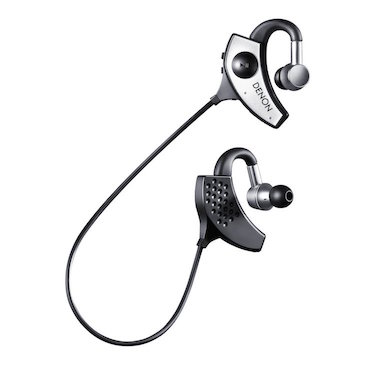
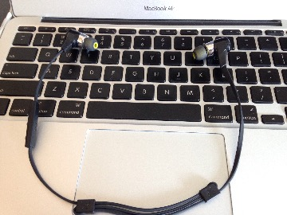
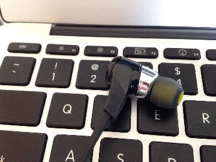
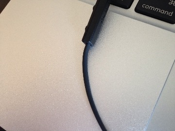
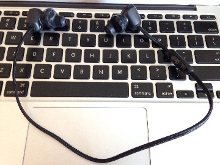
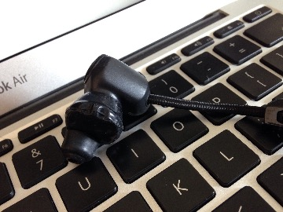
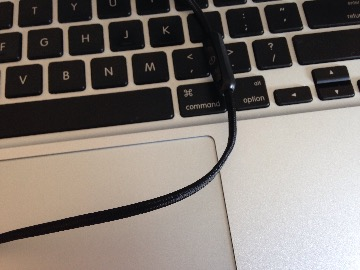
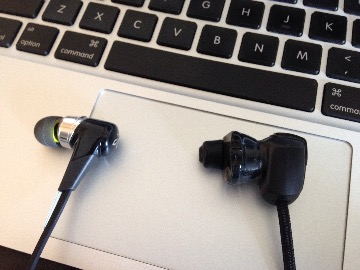

イヤホン
DENON AH-W200EM GLOBE CRUISER
| 使用期間 | xxxx/xx/xx-xxxx/xx/xx |
|---|---|
| 公式サイト | DENON AH-W200 |
| 購入サイト | 忘れた |

Amazonより
- 恐らく一番初めに買ったBluetoothイヤホン
- オーディオケーブルで端末とつなげば有線でも使える(バッテリー切れてもOK)のは良いと思った
- そのためのケーブルを持ち歩くと、本末転倒かもしれないが
壊れた
- 耳の部分を調節できるスライダーがすぐ断線寸前になって使わなくなった
買い替え
- すぐにBlueBuds Xに移行したわけではなく、いったん有線に戻ったりApple純正を引っぱり出したりして試行錯誤していた
Jaybird BlueBuds X 初代
| 使用期間 | 2014/01/31-2014/08/xx |
|---|---|
| 公式サイト | JayBird |
| 購入サイト | Apple公式 |

全体

レシーバーが小さくて邪魔にならない

ケーブルはきしめん状
- Bluetoothイヤホン
- 音質に関してはよくわからない
壊れた
- 2014年8月に一度 電源が入らなくなる 不具合にあう
- 電源ボタンを押しても応答しない
- 強制リセットボタンなどもないため他に試すことがない
- 充電すると充電ランプは点灯 するため完全に逝ったわけではないっぽい
- 保証期間内だったため、その時は交換対応をしてもらった
- どうも水に弱い(ランニング用なのに)のと、内部でビジー状態になる症状が出るようだ
交換対応時のメモ
国内でのサポートはフォーカルポイント株式会社 に任されているので、こちらでやり取りする。
サポートとのやり取り後、製品本体、ケーブル、保証書などすべてまとめてフォーカルポイントへ送付する事になった。
- コピーするもの
- 受付番号をメモしたもの
- 保証書のコピー
- レシート、領収書のコピー
- (条件によると思うけど)今回は元払い
Jaybird BlueBuds X 二代目
| 使用期間 | 2014/09/11-2015/06/xx |
|---|---|
| 公式サイト | JayBird |
| 購入サイト | BlueBuds X – フォーカルポイント株式会社 |
壊れた
- 2015年6月に初代と同じ現象(？)が再発し、 電源が入らなくなった
- 充電はされているみたいなので、断線とかそういう類の不具合ではなさそう
- 汗でやられた…？というかそれくらいしか考えられる原因が
- このブログの人は4回壊れているらしい
- JayBird BlueBuds X 破損！ - SCREAMO CREATIVE | WEBクリエーターの叫び
- サポートと連絡を取りつつ、故障品を送ってくださいとなった段階で駄目元と思いつつも電源オンオフを繰り返すと点いた！…が、数日でまたハングアップ。交代を余儀なくされた
- 何日たってから 充電しても常に緑ランプになる から電源がビジー状態的な何かになっているような気がする
- 普通、充電が始まると赤ランプが点灯する
- この時点で、保証期間を超過したため有償対応となった
買い替え
- 初代の時と同様、故障した現物を送付
- 送付後、フォーカルストアより再購入して下さいとの連絡をもらい、その指示に従った
Jaybird BlueBuds X 三代目
| 使用期間 | 2015/07/15-2015/08/06 |
|---|---|
| 公式サイト | JayBird |
| 購入サイト | BlueBuds X – フォーカルポイント株式会社 |
- 好きなんだけど壊れやすいのが最大のネック
- 保証期間が過ぎたためフォーカルポイントから購入
- 今回から純正の きしめん で充電してみる(あんまり変わらないと思うけど…)
壊れた
- はｗｗつｗｗかｗｗで壊れたｗｗｗ
- 草も生えるわ
- 今度は 充電を試みても充電ランプすら点灯せず
- 以下の電源から充電対象までのあらゆる組み合わせを試した結果、Nexusはすべて充電可能だったから、完全にこいつが壊れてる
- 自宅の電源*2つ
- USB電源アダプタ(Apple製品付属、Android製品付属、Anker製品)*3つ
- USB-MicroUSB変換ケーブル*3本
- 充電対象(JayBirdとNexus)
- 公式のFAQの回答で合致しそうなのはこれか。でも今まで(初代から三代目まで)充電の仕方は全部同じなのだよなぁ。それが原因？
交換するにもメールのやりとりから交換手配の手間がかかるから無償でやってくれるにしてもめんどくさいんだよなぁ…そろそろアンチになりそう
交換対応時のメモ
- 恐らく初期不良という事で、先行して交換品を送ってきてくれた
- この連絡がもう少し早ければ、予備機(LEAP WIRELESS)を買わずに済んだかも…
- 流れは
yurbuds LEAP WIRELESS
| 使用期間 | 2015/08/06- |
|---|---|
| 公式サイト | yurbuds LEAP WIRELESS |
| 購入サイト | ヨドバシカメラ |

全体

レシーバーはBlueBudsと同じ位？

ケーブルは太め
- Bluetoothイヤホン一本がすさまじく心細くなってきたので購入してみた
- 数日使った雑感としては、「どうも安定してハマっているように感じないが、動いても落ちない」
- ハマり心地はあまり良くないんだけど、全然落ちない。意外と悪くないのかも
- この辺は慣れか
- ただ、耳元がシリコン製でできているため、放ったらかしておくと(オフィスとか、意外と埃舞うし)埃がすごそう
- 定期的にメンテナンスしてやる必要があるかもしれない
- 連続使用時間は6時間。BlueBuds Xが8時間なので、どのくらい変わるか
BlueBuds Xとの比較

比較、やっぱり大きいか
Jaybird BlueBuds X 四代目
| 使用期間 | 2015/08/08- |
|---|---|
| 公式サイト | JayBird |
| 購入サイト | BlueBuds X – フォーカルポイント株式会社 |
- 今度はLEAP WIRELESSと並行稼動させていくつもりだから動かない日があっても凌げそう